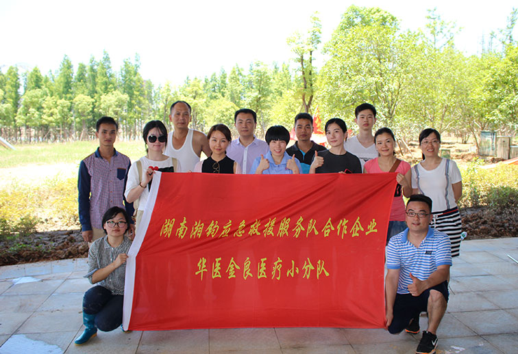
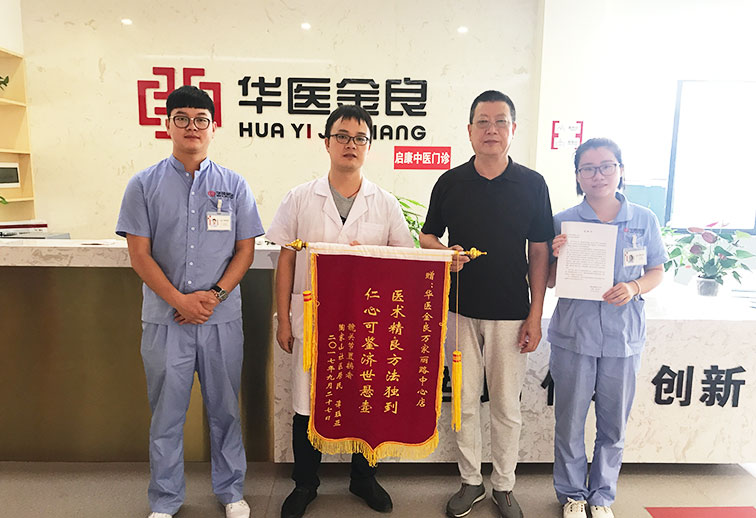
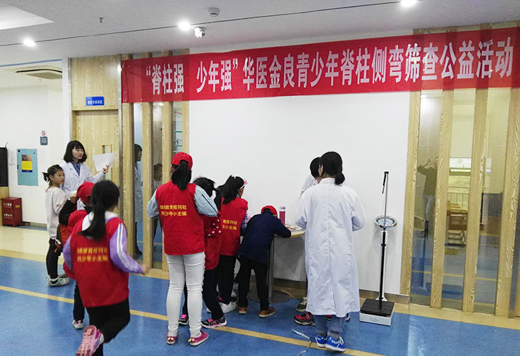
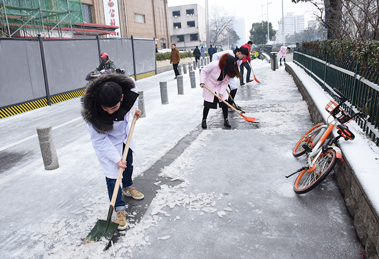
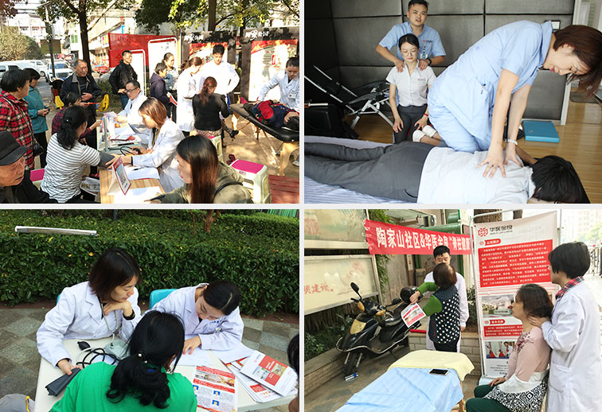
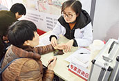

24小时专家咨询热线：
400-832-8329
心怀大爱，医者仁心 公益活动100+，覆盖人数10000+
-

抗洪赈灾
2017年夏，湘江洪灾，华医金良协同长沙市社会组织孵化基地，于湘江变窄地段的巴溪洲开展雨后清淤及医疗后勤工作，不畏炎热与辛若，走在清淤赈灾第一线！
-

爱心扶贫
华医金良方家丽路中心为家住周边社区、左髋关节全置换手术后康复患者谭钰亚老人进行费用全免康复治疗，爱心援助顶目落实到周边社区需要救助的贫困家庭。
-

青少年脊柱侧弯筛查
与湖南教育报刊社携手启动“脊柱强，少年强”系列公益活动，为青山中心小学、德润园小学、大元中心小学、博才金鹰小学、南塘小学、西湖小学等共计200多名学生进行了青少年脊柱侧弯筛查项目。
-

暖心破冰
长沙迎来近年最冷时节，路面冰冻，市民出行艰难。华医金良医务及后勤人员立“义务破冰小组”，针对周边的公交车站、地下通道出入口等行人较多的路面，开始清除路面冰层，为过往路人提供安全的通行。
-

公益传播
医疗应该是温情的，离不开爱的维系。华医金良成立至今，一直致力于公益事业，与政府、企事业单位、社会团体一同主办、承办过多次公益活动。也为部分贫困家庭提供过免费康复治疗，为多名家庭拮据并急需治疗的病患儿童发起线上筹款并全额给予患者家庭。
- 
-
 爱心筹款
爱心筹款
为贫困家庭成员、严重脊柱侧弯患者、11岁的廖婕怡同学进行非手术治疗公益援助，并为a其全程操办线上筹款事宜，当月为廖婕怡筹集50077元善款。